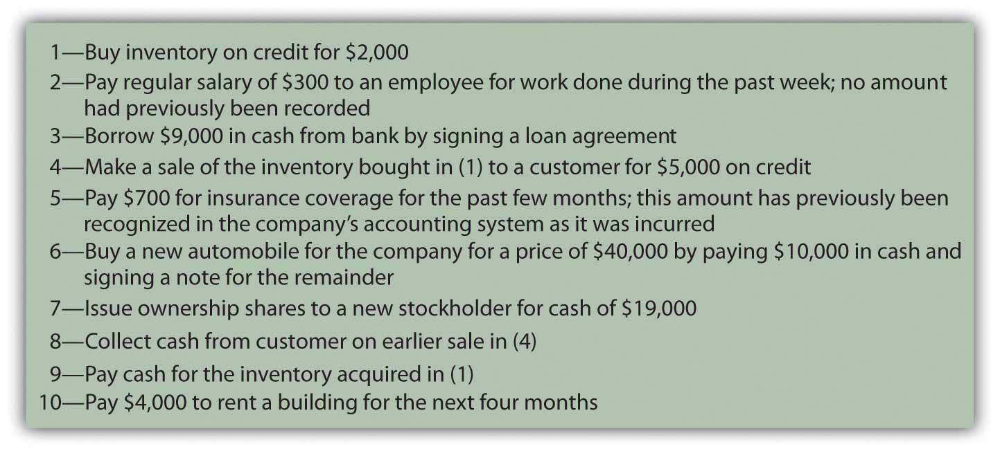

At the end of this section, students should be able to meet the following objectives:
Question: Information provided by a set of financial statements is essential to any individual analyzing a business or other organization. The availability of a fair representation of a company’s financial position, operations, and cash flows is invaluable for a wide array of decision makers. However, the sheer volume of data that a company such as General Mills, McDonald’s, or PepsiCo must gather in order to prepare these statements has to be astronomical. Even a small enterprise—a local convenience store, for example—generates a significant quantity of information virtually every day. How does an accountant begin the process of accumulating all the necessary data so that financial statements can eventually be produced?
Answer: The accounting process starts by analyzing the effect of transactionsEvents that have a financial impact on an organization that must be gathered, sorted, classified and turned into financial statements by means of an accounting system.—any event that has a financial impact on a company. Large organizations participate in literally millions of transactions each year that must be gathered, sorted, classified, and turned into a set of financial statements that cover a mere four or five pages. Over the decades, accountants have had to become very efficient to fulfill this seemingly impossible assignment. Despite the volume of transactions, the goal remains the same: to prepare financial statements that are presented fairly because they contain no material misstatements according to U.S. generally accepted accounting principles (U.S. GAAP).
For example, all the occurrences listed in Figure 4.1 "Transactions Frequently Encountered" are typical transactions that any company might encounter. Each causes some measurable effect on a company’s assets, liabilities, revenues, expenses, gains, losses, capital stock, or dividends paid. The accounting process begins with an analysis of each transaction to determine the financial changes that took place. Was revenue earned? Did a liability increase? Has an asset been acquired?
Figure 4.1 Transactions Frequently Encountered
In any language, successful communication is only possible if the information to be conveyed is properly understood. Likewise, in accounting, transactions must be analyzed so their impact is understood. A vast majority of transactions are relatively straightforward so that, with experience, the accountant can ascertain the financial impact almost automatically. For transactions with greater complexity, the necessary analysis becomes more challenging. However, the importance of this initial step in the production of financial statements cannot be overstressed. The well-known computer aphorism captures the essence quite succinctly: “garbage in, garbage out.” There is little hope that financial statements can be fairly presented unless the entering data are based on an appropriate identification of the changes created by each transaction.
Link to multiple-choice question for practice purposes: http://www.quia.com/quiz/2092626.html
Question: Transaction 1—A company buys inventory on credit for $2,000. How does transaction analysis work here? What accounts are affected by this purchase?
Answer: Inventory, which is an asset, increases by $2,000. The organization has more inventory than it did prior to the purchase. Because no money has yet been paid for these goods, a liability for the same amount has been created. The term accounts payableShort-term liabilities to pay for goods and services that have been acquired. is often used in financial accounting to represent debts resulting from the acquisition of inventory and supplies.
inventory (asset) increases by $2,000 accounts payable (liability) increases by $2,000Note that the accounting equation described in the previous chapter remains in balance. Assets have gone up by $2,000 while the liability side of the equation has also increased by the same amount to reflect the source of this increase in the company’s assets.
Link to multiple-choice question for practice purposes: http://www.quia.com/quiz/2092605.html
Question: Transaction 2—A company pays a salary of $300 to one of its employees for work performed during the past week. No amount had previously been recorded by the accounting system for this amount. What accounts are affected by this salary payment?
Answer: Cash (an asset) is decreased here by $300. Whenever cash is involved in a transaction, determining that change is a good place to start the analysis. Increases and decreases in cash are often obvious.
The cash balance declined here because salary was paid to an employee. Assets were reduced as a result of the payment. That is a cost to the company. Thus, a salary expense of $300 is reported. Recognizing an expense is appropriate rather than an asset because the employee’s work reflects a past benefit. The effort has already been carried out, generating revenues for the company in the previous week rather than in the future.
salary expense (expense) increases by $300 cash (asset) decreased by $300The continued equilibrium of the accounting equation does exist here although it is less obvious. Assets are decreased. At the same time, an expense is recognized. This expense reduces reported net income. On the statement of retained earnings, current net income becomes a component of retained earnings. The reduction in income here serves to decrease retained earnings. Because both assets and retained earnings go down by the same amount, the accounting equation continues to balance.
Question: In Transaction 2, the company paid a salary of $300 that it owed to a worker. Why does a payment to an employee not reduce a salary payable balance?
Answer: Costs such as salary, rent, or interest increase gradually over time and are often referred to as accrued expenses because the term “accrue” means “to grow.” An accounting system can be mechanically structured to record such costs in either of two ways. The results are the same but the steps in the process differ.
A company can recognize an accrued expense (such as a salary) as incurred or wait until payment. This decision depends on the preference of company officials. The end result (an expense is reported and cash decreased) is the same, but the recording procedures differ. As will be discussed, if no entry has been made for such costs prior to the production of financial statements (the first alternative), both the expense and the payable do have to be recognized at that time so that all balances are properly stated for reporting purposes.
Link to multiple-choice question for practice purposes: http://www.quia.com/quiz/2092606.html
Question: Transaction 3—A company borrows $9,000 from a bank. What is the impact of signing a loan agreement with a bank or other lending institution?
Answer: Cash is increased by the amount of money received from the lender. The company is obligated to repay this balance and, thus, has incurred a new liability. As with many transactions, the financial impact is reasonably easy to ascertain.
cash (asset) increases by $9,000 note payable (liability) increases by $9,000Most organizations must gather an enormous quantity of information as a prerequisite for preparing financial statements periodically. This process begins with an analysis of the impact of each transaction (financial event). After the effect on all account balances is ascertained, the recording of a transaction is relatively straightforward. The changes caused by most transactions—the purchase of inventory or the signing of a note, for example—can be determined quickly. For accrued expenses, such as salary or rent that grow over time, the accounting system can record the amounts gradually as incurred or only at the point of payment. However, the figures to be reported are not impacted by the specific mechanical steps that are taken.